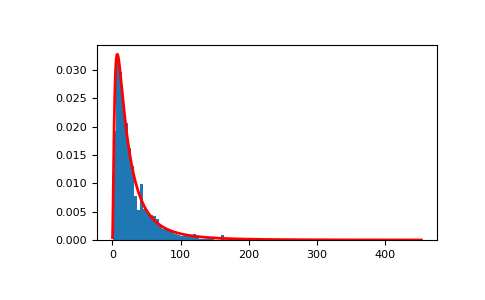
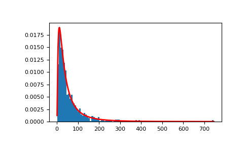

numpy.random.Generator.lognormal¶
method
-
Generator.lognormal(mean=0.0, sigma=1.0, size=None)¶ Draw samples from a log-normal distribution.
Draw samples from a log-normal distribution with specified mean, standard deviation, and array shape. Note that the mean and standard deviation are not the values for the distribution itself, but of the underlying normal distribution it is derived from.
- Parameters
- meanfloat or array_like of floats, optional
Mean value of the underlying normal distribution. Default is 0.
- sigmafloat or array_like of floats, optional
Standard deviation of the underlying normal distribution. Must be non-negative. Default is 1.
- sizeint or tuple of ints, optional
Output shape. If the given shape is, e.g.,
(m, n, k), thenm * n * ksamples are drawn. If size isNone(default), a single value is returned ifmeanandsigmaare both scalars. Otherwise,np.broadcast(mean, sigma).sizesamples are drawn.
- Returns
- outndarray or scalar
Drawn samples from the parameterized log-normal distribution.
See also
scipy.stats.lognormprobability density function, distribution, cumulative density function, etc.
Notes
A variable x has a log-normal distribution if log(x) is normally distributed. The probability density function for the log-normal distribution is:
where
 is the mean and is the standard
deviation of the normally distributed logarithm of the variable.
A log-normal distribution results if a random variable is the product
of a large number of independent, identically-distributed variables in
the same way that a normal distribution results if the variable is the
sum of a large number of independent, identically-distributed
variables.
is the mean and is the standard
deviation of the normally distributed logarithm of the variable.
A log-normal distribution results if a random variable is the product
of a large number of independent, identically-distributed variables in
the same way that a normal distribution results if the variable is the
sum of a large number of independent, identically-distributed
variables.References
- 1
Limpert, E., Stahel, W. A., and Abbt, M., “Log-normal Distributions across the Sciences: Keys and Clues,” BioScience, Vol. 51, No. 5, May, 2001. https://stat.ethz.ch/~stahel/lognormal/bioscience.pdf
- 2
Reiss, R.D. and Thomas, M., “Statistical Analysis of Extreme Values,” Basel: Birkhauser Verlag, 2001, pp. 31-32.
Examples
Draw samples from the distribution:
>>> rng = np.random.default_rng() >>> mu, sigma = 3., 1. # mean and standard deviation >>> s = rng.lognormal(mu, sigma, 1000)
Display the histogram of the samples, along with the probability density function:
>>> import matplotlib.pyplot as plt >>> count, bins, ignored = plt.hist(s, 100, density=True, align='mid')
>>> x = np.linspace(min(bins), max(bins), 10000) >>> pdf = (np.exp(-(np.log(x) - mu)**2 / (2 * sigma**2)) ... / (x * sigma * np.sqrt(2 * np.pi)))
>>> plt.plot(x, pdf, linewidth=2, color='r') >>> plt.axis('tight') >>> plt.show()
Demonstrate that taking the products of random samples from a uniform distribution can be fit well by a log-normal probability density function.
>>> # Generate a thousand samples: each is the product of 100 random >>> # values, drawn from a normal distribution. >>> rng = rng >>> b = [] >>> for i in range(1000): ... a = 10. + rng.standard_normal(100) ... b.append(np.product(a))
>>> b = np.array(b) / np.min(b) # scale values to be positive >>> count, bins, ignored = plt.hist(b, 100, density=True, align='mid') >>> sigma = np.std(np.log(b)) >>> mu = np.mean(np.log(b))
>>> x = np.linspace(min(bins), max(bins), 10000) >>> pdf = (np.exp(-(np.log(x) - mu)**2 / (2 * sigma**2)) ... / (x * sigma * np.sqrt(2 * np.pi)))
>>> plt.plot(x, pdf, color='r', linewidth=2) >>> plt.show()
